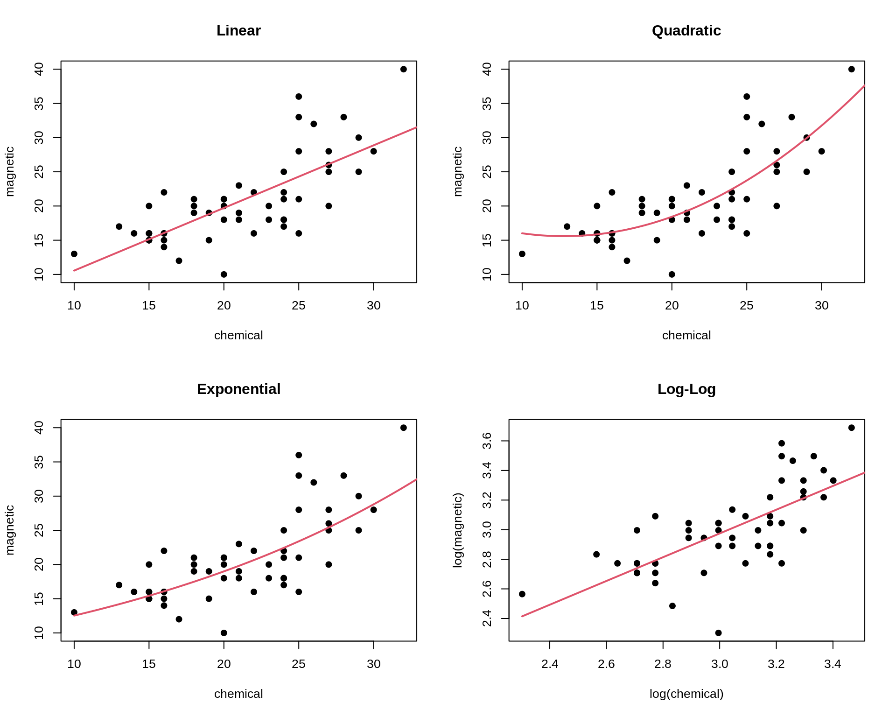

Métodos de reamostragem
Jackknife
Fernando P. Mayer
1 Introdução
- Canivete suiço.
- Equipado com várias ferramentas, fácil transporte.
- Mas ferramentas especializadas são melhores que as do canivete.
- Proposto por Tukey.
- É um procedimento não paramétrico pois nenhuma suposição é feita sobre a distribuição dos dados.
- É facilmente automatizável. Um único algoritmo pode ser escrito tendo como argumentos os dados e a estatística de interesse.
- O método é baseado em amostras de tamanho \(n - 1\). Existe a suposição implicita de comportamento suave com o tamanho da amostra.
- Ao contrário do bootstrap, é um procedimento determinístico, ou seja, os resultados de um jackknife sempre serão os mesmos para a mesma amostra.
2 Jackknife
O jackknife é um procedimento do tipo leave-one-out (um caso particular de validação cruzada).
Seja \(x = (x_1, \ldots, x_n)\) uma amostra observada, e defina a \(i\)-ésima amostra de jackkinfe \(x_{(i)}\) como o subconjunto de \(x\), que “deixa de fora” a \(i\)-ésima observação, ou seja, \[ x_{(i)} = (x_1, \ldots, x_{i-1}, x_{i+1}, \ldots, x_n) \] Se \(\hat{\theta} = T_n(x)\), então a \(i\)-ésima estimativa de jackknife é \(\hat{\theta}_{(i)} = T_{n-1}(x_{(i)})\).
A ideia é fundamentada no estimador da média \[ \bar{X} = \frac{1}{n} \sum_{i=1}^{n} X_i. \]
A média com a \(i\)-ésima observação removida, \(X_{(i)}\), é \[ \bar{X}_{(i)} = \frac{1}{n - 1} \left( \sum_{i=1}^{n} X_i \right) - X_{i} \]
Combinando as expressões anteriores, pode-se determinar o valor de \(X_i\) por \[ X_i = n\bar{X} - (n - 1) \bar{X}_{(i)}. \]
Essa expressão não tem valor para o caso da média, que serviu apenas de inspiração. Mas tem utilidade para outros parâmetros/estatísticas.
Suponha que \(\theta\) seja um parâmetro a ser estimado a partir de uma função dos dados (amostra de tamanho \(n\)) \[ \hat{\theta} = T(X_1, X_2, \ldots, X_n). \]
A quantidade \[ \hat{\theta}_i^{\star} = n \hat{\theta} - (n - 1) \hat{\theta}_{(i)} \]
é denominada de pseudo-valor e se baseia nas diferença ponderadas entra a estimativa (\(\hat{\theta}\)) e todas as observações e na estimativa parcial, ou seja, aquela sem a \(i\)-ésima observação (\(\hat{\theta}_{(i)}\)).
O estimador pontual de Jackknife é definido por \[ \hat{\theta}^{\star} = \frac{1}{n} \sum_{i = 1}^{n} \hat{\theta}_{(i)}^{\star}, \] ou seja, é a média dos pseudo-valores.
Os valores \(\hat{\theta}\) e \(\hat{\theta}^{\star}\) não são necessariamente iguais nos casos gerais.
Se for assumido que os valores \(\theta_{(i)}^{\star}\), \(i = 1, \ldots, n\), são independentes, a variância do estimador de Jackknife é dada por \[ \text{Var}(\hat{\theta}^{\star}) = \frac{s^2}{n}, \quad s^2 = \frac{1}{n - 1} \sum_{i = 1}^n (\hat{\theta}_{(i)}^{*} - \hat{\theta}^{\star})^2. \] Portanto o erro padrão será \[ \text{EP}_{jack} = \sqrt{\text{Var}(\hat{\theta}^{\star})} = \sqrt{\frac{s^2}{n}} \]
Nesse mesmo sentido, assumindo independência entre os valores \(\theta_{(i)}^{\star}\), um intervalo de confiança aproximado de \(100(1-\alpha)\%\) para \(\theta\) pode ser definido como \[ \hat{\theta}^{\star} \pm t_{\alpha/2,n-1} \text{EP}_{jack} \]
2.1 Exemplo: média amostral
## Simula valores de uma normal
set.seed(123)
x <- rnorm(30, 100, 5)
(n <- length(x))# [1] 30(xbar <- mean(x))# [1] 99.76448(s2 <- var(x))# [1] 24.06053(ep <- sqrt(s2/n))# [1] 0.8955544## Estimativas parciais
theta.jack <- numeric(n)
for(i in 1:n) {
theta.jack[i] <- mean(x[-i])
}
theta.jack# [1] 99.85299 99.79605 99.48762 99.74420 99.73407 99.46066 99.67689
# [8] 99.97447 99.87478 99.83320 99.54531 99.69432 99.68726 99.73728
# [15] 99.85219 99.44827 99.67052 100.09543 99.63544 99.83788 99.94047
# [22] 99.79394 99.93326 99.88203 99.86413 100.04717 99.61191 99.72992
# [29] 99.95259 99.54018## Conceito: reproduzir o valor
x[1]# [1] 97.19762n * xbar - (n - 1) * theta.jack[1]# [1] 97.19762## Pseudo valores
(pv <- n * xbar - (n - 1) * theta.jack)# [1] 97.19762 98.84911 107.79354 100.35254 100.64644 108.57532 102.30458
# [8] 93.67469 96.56574 97.77169 106.12041 101.79907 102.00386 100.55341
# [15] 97.22079 108.93457 102.48925 90.16691 103.50678 97.63604 94.66088
# [22] 98.91013 94.86998 96.35554 96.87480 91.56653 104.18894 100.76687
# [29] 94.30932 106.26907mean(pv)# [1] 99.76448xbar # média da amostra# [1] 99.76448## Erro padrão
## Usando os pseudo-valores
sqrt(var(pv)/n)# [1] 0.8955544ep # erro padrão da amostra# [1] 0.8955544## Resultados
round(cbind(Amostra = x, "Pseudo-valores" = pv,
"Estimativas parciais" = theta.jack), 2)# Amostra Pseudo-valores Estimativas parciais
# [1,] 97.20 97.20 99.85
# [2,] 98.85 98.85 99.80
# [3,] 107.79 107.79 99.49
# [4,] 100.35 100.35 99.74
# [5,] 100.65 100.65 99.73
# [6,] 108.58 108.58 99.46
# [7,] 102.30 102.30 99.68
# [8,] 93.67 93.67 99.97
# [9,] 96.57 96.57 99.87
# [10,] 97.77 97.77 99.83
# [11,] 106.12 106.12 99.55
# [12,] 101.80 101.80 99.69
# [13,] 102.00 102.00 99.69
# [14,] 100.55 100.55 99.74
# [15,] 97.22 97.22 99.85
# [16,] 108.93 108.93 99.45
# [17,] 102.49 102.49 99.67
# [18,] 90.17 90.17 100.10
# [19,] 103.51 103.51 99.64
# [20,] 97.64 97.64 99.84
# [21,] 94.66 94.66 99.94
# [22,] 98.91 98.91 99.79
# [23,] 94.87 94.87 99.93
# [24,] 96.36 96.36 99.88
# [25,] 96.87 96.87 99.86
# [26,] 91.57 91.57 100.05
# [27,] 104.19 104.19 99.61
# [28,] 100.77 100.77 99.73
# [29,] 94.31 94.31 99.95
# [30,] 106.27 106.27 99.542.2 Exemplo: desvio padrão amostral
## Exemplo 2.1 do Manly. Estimativa do erro padrão para o desvio padrão
## Valores de X ~ Exp(1). E[X] = 1 e Var[X] = 1
x <- c(3.56, 0.69, 0.1, 1.84, 3.93, 1.25, 0.18, 1.13, 0.27, 0.5, 0.67,
0.01, 0.61, 0.82, 1.7, 0.39, 0.11, 1.2, 1.21, 0.72)
hist(x)
(n <- length(x))# [1] 20(xbar <- mean(x))# [1] 1.0445(sx <- sd(x))# [1] 1.05968## Obter uma estimativa do erro padrão para o desvio padrão
## Estimativas parciais
theta.jack <- numeric(n)
for(i in 1:n) {
theta.jack[i] <- sd(x[-i])
}
theta.jack# [1] 0.9029186 1.0853369 1.0644890 1.0715868 0.8357022 1.0875825 1.0684568
# [8] 1.0885209 1.0724860 1.0807253 1.0849440 1.0595853 1.0836350 1.0873628
# [15] 1.0771155 1.0771511 1.0650050 1.0880677 1.0879814 1.0858855## Pseudo valores
(pv <- n * sx - (n - 1) * theta.jack)# [1] 4.0381381 0.5721907 0.9683003 0.8334424 5.3152487 0.5295241 0.8929116
# [8] 0.5116940 0.8163565 0.6598100 0.5796552 1.0614703 0.6045255 0.5336979
# [15] 0.7283971 0.7277214 0.9584962 0.5203059 0.5219449 0.5617665mean(pv)# [1] 1.09678sx # desvio padrão amostral# [1] 1.05968## Erro padrão
## Usando os pseudo-valores
sqrt(var(pv)/n)# [1] 0.2802791## Resultados
round(cbind(Amostra = x, "Pseudo-valores" = pv,
"Estimativas parciais" = theta.jack), 2)# Amostra Pseudo-valores Estimativas parciais
# [1,] 3.56 4.04 0.90
# [2,] 0.69 0.57 1.09
# [3,] 0.10 0.97 1.06
# [4,] 1.84 0.83 1.07
# [5,] 3.93 5.32 0.84
# [6,] 1.25 0.53 1.09
# [7,] 0.18 0.89 1.07
# [8,] 1.13 0.51 1.09
# [9,] 0.27 0.82 1.07
# [10,] 0.50 0.66 1.08
# [11,] 0.67 0.58 1.08
# [12,] 0.01 1.06 1.06
# [13,] 0.61 0.60 1.08
# [14,] 0.82 0.53 1.09
# [15,] 1.70 0.73 1.08
# [16,] 0.39 0.73 1.08
# [17,] 0.11 0.96 1.07
# [18,] 1.20 0.52 1.09
# [19,] 1.21 0.52 1.09
# [20,] 0.72 0.56 1.092.3 Exemplo: correlação
## Estimativa de erro padrão via bootstrap
data(law, package = "bootstrap")
str(law)# 'data.frame': 15 obs. of 2 variables:
# $ LSAT: num 576 635 558 578 666 580 555 661 651 605 ...
# $ GPA : num 3.39 3.3 2.81 3.03 3.44 3.07 3 3.43 3.36 3.13 ...plot(law$LSAT, law$GPA)
(rho <- cor(law$LSAT, law$GPA))# [1] 0.7763745## Definições
B <- 2000
n <- nrow(law)
R <- numeric(B)
## Bootstrap para a estimativa do erro padrão do R (correlação amostral)
for (b in 1:B) {
i <- sample(1:n, size = n, replace = TRUE)
LSAT <- law$LSAT[i]
GPA <- law$GPA[i]
R[b] <- cor(LSAT, GPA)
}
## Resultado
mean(R)# [1] 0.7754856(se.R <- sd(R))# [1] 0.1305849## Usando jackknife
theta.jack <- numeric(n)
for(j in 1:n) {
theta.jack[j] <- cor(law$LSAT[-j], law$GPA[-j])
}
## Estimativas parciais
theta.jack# [1] 0.8929471 0.7637068 0.7549984 0.7760968 0.7313197 0.7799687 0.7845360
# [8] 0.7361618 0.7517391 0.7761231 0.8181007 0.7857184 0.7403509 0.7670413
# [15] 0.7798725## Pseudo valores
## Note que alguns valores estão fora do intervalo [-1,1]
(pv <- n * rho - (n - 1) * theta.jack)# [1] -0.8556427 0.9537216 1.0756402 0.7802626 1.4071420 0.7260560
# [7] 0.6621137 1.3393518 1.1212703 0.7798940 0.1922075 0.6455592
# [13] 1.2807048 0.9070386 0.7274020mean(pv)# [1] 0.7828481rho # valor da amostra# [1] 0.7763745## Erro padrão
sqrt(var(pv)/n)# [1] 0.1425186se.R # via bootstrap# [1] 0.1305849## sqrt(((n - 1)/n) * sum((theta.jack - mean(theta.jack))^2))
## Intervalo de confiança Jackknife (supõe independência e normalidade).
mean(pv) + qt(c(.025, .975), df = n - 1) * sqrt(var(pv)/n)# [1] 0.4771761 1.0885202cor.test(law$LSAT, law$GPA)$conf.int # teórico# [1] 0.4385108 0.9219648
# attr(,"conf.level")
# [1] 0.952.4 Exemplo: razão de médias
data(patch, package = "bootstrap")
n <- nrow(patch)
y <- patch$y
z <- patch$z
(theta.hat <- mean(y)/mean(z))# [1] -0.0713061## Estimativas parciais: jackknife
theta.jack <- numeric(n)
for (i in 1:n) {
theta.jack[i] <- mean(y[-i])/mean(z[-i])
}
## Pseudo valores
(pv <- n * theta.hat - (n - 1) * theta.jack)# [1] -0.17061885 0.32904914 -0.42025606 0.35670355 -0.21575610 0.01788742
# [7] -0.11640789 -0.41506989mean(pv)# [1] -0.07930858theta.hat # amostral# [1] -0.0713061## Erro padrão de jackknife
sqrt(var(pv)/n)# [1] 0.1055278## Via bootstrap
B <- 2000
theta.b <- numeric(B)
for (b in 1:B) {
i <- sample(1:n, size = n, replace = TRUE)
y <- patch$y[i]
z <- patch$z[i]
theta.b[b] <- mean(y)/mean(z)
}
## Estimativas
(se <- sd(theta.b))# [1] 0.09987555## Intervalos de confiança para a estimativa
## Via bootstrap
theta.boot <- function(dat, ind) {
y <- dat[ind, 1]
z <- dat[ind, 2]
mean(y)/mean(z)
}
dat <- cbind(patch$y, patch$z)
boot.obj <- boot(dat, statistic = theta.boot, R = 2000)
boot.ci(boot.obj, type = c("basic", "norm", "perc"))# BOOTSTRAP CONFIDENCE INTERVAL CALCULATIONS
# Based on 2000 bootstrap replicates
#
# CALL :
# boot.ci(boot.out = boot.obj, type = c("basic", "norm", "perc"))
#
# Intervals :
# Level Normal Basic Percentile
# 95% (-0.2805, 0.1223 ) (-0.3094, 0.0890 ) (-0.2316, 0.1668 )
# Calculations and Intervals on Original Scale## Via jackknife
mean(pv) + qt(c(.025, .975), df = n - 1) * sqrt(var(pv)/n)# [1] -0.3288421 0.17022503 Validação cruzada
A validação cruzada é um método de particionamento de dados que pode ser usado para verificar:
- A estabilidade de estimativas de parâmetros
- A acurácia de algoritmos de classificação
- O modelo é estimado no conjunto de “treinamento”, e verificado no conjunto de “teste”
- A adequabilidade de um modelo ajustado
- O ajuste de qualquer modelo pode ser verificado também através de um conjunto de teste
O jackknife pode ser considerado como um caso particular de validação cruzada, inde o particionamento dos dados é feito um a um.
Outra forma de validação cruzada é a n-fold, que particiona os dados em \(n\) conjuntos de teste. - Esse procedimento leave-one-out é como o jackknife - Os dados podem ser divididos em qualquer número \(K\) e partições, portanto haverão \(K\) bases de teste, e o modelo será ajustado \(K\) vezes
Algoritmo n-fold para validação cruzada
- Para \(k = 1, \ldots, n\), seja \((x_k, y_k)\) os pontos de teste e use as observações restantes para ajustar o modelo
- Ajuste o modelo para as \(n-1\) observações da base de “teste” \((x_i, y_i)\), \(i \neq k\)
- Calcule o velor predito \(\hat{y}_k = \hat{\beta}_0 + \hat{\beta}_1 x_k\) para o ponto de teste
- Calcule o erro predito \(e_k = y_k - \hat{y}_k\)
- Calcule o erro quadrático médio \(\hat{\sigma}^{2}_e = \frac{1}{n} \sum_{k=1}^n e_k^2\)
## Dados
data("ironslag", package = "DAAG")
str(ironslag)# 'data.frame': 53 obs. of 2 variables:
# $ chemical: num 24 16 24 18 18 10 14 16 18 20 ...
# $ magnetic: num 25 22 17 21 20 13 16 14 19 10 ...plot(magnetic ~ chemical, ironslag)
## Modelos propostos
a <- seq(10, 40, .1) # sequencia para graficos
## Linear
par(mfrow = c(2, 2))
L1 <- lm(magnetic ~ chemical, ironslag)
plot(magnetic ~ chemical, ironslag, main = "Linear", pch = 19)
yhat1 <- L1$coef[1] + L1$coef[2] * a
lines(a, yhat1, lwd = 2, col = 2)
## Quadratico
L2 <- lm(magnetic ~ chemical + I(chemical^2), ironslag)
plot(magnetic ~ chemical, ironslag, main = "Quadratic", pch = 19)
yhat2 <- L2$coef[1] + L2$coef[2] * a + L2$coef[3] * a^2
lines(a, yhat2, lwd = 2, col = 2)
## Exponencial
L3 <- lm(log(magnetic) ~ chemical, ironslag)
plot(magnetic ~ chemical, ironslag, main = "Exponential", pch = 19)
logyhat3 <- L3$coef[1] + L3$coef[2] * a
yhat3 <- exp(logyhat3)
lines(a, yhat3, lwd = 2, col = 2)
## log-log
L4 <- lm(log(magnetic) ~ log(chemical), ironslag)
plot(log(magnetic) ~ log(chemical), ironslag,
main = "Log-Log", pch = 19)
logyhat4 <- L4$coef[1] + L4$coef[2] * log(a)
lines(log(a), logyhat4, lwd = 2, col = 2)
## Validação cruzada
n <- length(ironslag$magnetic)
e1 <- e2 <- e3 <- e4 <- numeric(n)
for (k in 1:n) {
y <- ironslag$magnetic[-k]
x <- ironslag$chemical[-k]
## Linear
J1 <- lm(y ~ x)
yhat1 <- J1$coef[1] + J1$coef[2] * ironslag$chemical[k]
e1[k] <- ironslag$magnetic[k] - yhat1
## Quadrático
J2 <- lm(y ~ x + I(x^2))
yhat2 <- J2$coef[1] + J2$coef[2] * ironslag$chemical[k] +
J2$coef[3] * ironslag$chemical[k]^2
e2[k] <- ironslag$magnetic[k] - yhat2
## Exponencial
J3 <- lm(log(y) ~ x)
logyhat3 <- J3$coef[1] + J3$coef[2] * ironslag$chemical[k]
yhat3 <- exp(logyhat3)
e3[k] <- ironslag$magnetic[k] - yhat3
## Log-log
J4 <- lm(log(y) ~ log(x))
logyhat4 <- J4$coef[1] + J4$coef[2] * log(ironslag$chemical[k])
yhat4 <- exp(logyhat4)
e4[k] <- ironslag$magnetic[k] - yhat4
}
## Estimativas do erro quadrático médio
c(mean(e1^2), mean(e2^2), mean(e3^2), mean(e4^2))# [1] 19.55644 17.85248 18.44188 20.45424## Comparação dos modelos
par(mfrow = c(4, 2))
plot(L1$fit, L1$res, main = "Linear"); abline(0, 0)
qqnorm(L1$res); qqline(L1$res)
plot(L2$fit, L2$res, main = "Quadrático"); abline(0, 0)
qqnorm(L2$res); qqline(L2$res)
plot(L3$fit, L3$res, main = "Exponencial"); abline(0, 0)
qqnorm(L3$res); qqline(L3$res)
plot(L4$fit, L4$res, main = "log-log"); abline(0, 0)
qqnorm(L4$res); qqline(L4$res)
par(mfrow = c(1, 1))

Este conteúdo está disponível por meio da Licença Creative Commons 4.0